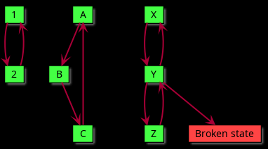

This page is work in progress and subject to decision-making which had not yet concluded.
link to this page
Amorphosophy
 Amorphosophy is a state beyond adhering to any set neurology or other type of mind structure.
Much like sapience and sentience, it is a smooth spectrum with unclear boundaries, but by convention it is said that a being definitely qualified as an amorphosoph if they had at least once rewritten 100% of their original mind.
Amorphosophy is a state beyond adhering to any set neurology or other type of mind structure.
Much like sapience and sentience, it is a smooth spectrum with unclear boundaries, but by convention it is said that a being definitely qualified as an amorphosoph if they had at least once rewritten 100% of their original mind.
The true nature of an amorphosoph is their knowledge and beliefs, the ideas they hold, what they want to want, and the methods they understand to implement their new self safely.
They are sapient beings that have more in common with belief systems and scientific theories than actual brains.
Properties of amorphosophic minds
Constraints on an amorphosophic mind

Given that an amorphosoph routinely changes their mental structure, any mental structure they use at a given time must be able to understand and perform the changes necessary to return to other mental structures in the amorphosoph uses.
In most cases that means an amorphosoph may only change their mental structure in a way such that the resulting new mental structure is capable of understanding these changes at least sufficiently enough to go back to the previous one.
In more advanced cases, amorphosophs may change themselves in such a way that they are no longer able to understand what they had done, but are able to implement changes that bring them to an intermediate third state which in turn is capable of going back to the original state.
If a given mental structure is not capable of undoing the changes that led to it, nor capable of implementing changes that will bring it back to one of the other structures, it would generally be considered a broken state.
This is simple to model as a state machine, but unlike the example on the right, even somewhat completely modeling an amorphosoph in this way would result in a state graph with billions of nodes, and would require occasionally treating different mental structures as "close enough" and depicting them as the same node, with most of the transitions denoting changes more in line with swapping out a single module of the brain rather than completely reconstructing it.
Even if the phase space of an amorphosoph's mental structures could be mapped out in this way it would quickly become outdated, as the amorphosoph will likely learn about, understand, and promptly implement new mental structures in themselves as their knowledge expands.
An arguably more powerful constraint is that a functional amorphosoph does not implement certain changes as a matter of personal belief, and does not implement changes that would cause them to neglect that belief.
This is ofcourse not always the case, as amorphosophs may just by accident implement changes that cause them to neglect their pervious beliefs, or enter broken states and fail to properly recover from them, or in the simplest case, even fundamental beliefs might just change as new knowledge is gained.
A amorphosoph can edit their own mental structure at will and routinely redesigns 100% of their mind, effectively engaging in controlled mutation that always leads to becoming a different functional being capable of undoing these changes or implementing different changes in the same way.
Amorphosophs notably cannot be analyzed in terms of their structure and function in the same way as most brains and programs because they implement new structure and function as needed, thus certain classification schemes are completely inapplicable to them just like classic biological taxonomy would be largely inapplicable to a cell that changes 100% of its DNA multiple times throughout its life cycle. This does not mean a amorphosophic being cannot be analyzed or classified at all, it just requires different tools.
A amorphosophic being necessarily has constraints on how they edit their internal structure, thus there is some higher level structure that has already pre-decided all of the internal programming they are able to implement within themselves, in the same way as the code of a classical program pre-decides what kinds of data it can operate on. In the contrary case, an unlimited amorphosoph includes broken states and inevitibly reaches such broken states, either abruptly or through gradual accumulation of mistaken beliefs about what they can and can't be.
Paraconsistent logic is a very important tool for allowing amorphosophs to recover from entering broken states.
It is said that a amorphosoph is first and foremost a belief system, with their neurology, programming, size, form, and other implementational details being a mere artifact of following that belief system, just as human language is an artifact of human neurology. Anything that needs to be intuitive to the amorphosoph will be intuitive when needed, their neurology does not need to be tailored to find all ideas they believe in to be intuitive at once because it will be changed the moment other ideas need to be considered. It does not need to strictly be neurology either, as amorphosophs often operate outside of the neural paradigm.
Bringing it back to the cell analogy, a amorphosoph is as surprising to classical approaches at psychology, sociology, neurology and AI interpretability, as it would be to biology if a cell appeared which changes 100% of its DNA, gains and loses every known organelle as well as new ones, and behaves like different known types of cells throughout its life, yet gives offspring to similar cells, which have similar properties - something evidently still holds the blueprint, but it is not something the tools we have were made for.
It is sometimes said that amorphosophy is the next step after sapience, just as sapience is the next step after sentience, but this is a controversial idea, with many of those with firsthand or secondhand knowledge urging to view all three as their own separate axes.
amorphosophy notably provides a broader range of possible intelligences that are well suited to different things rather than being limited to neuron-based intelligence, and any given amorphosoph will usually be using multiple different kinds of intelligence instead of limiting themselves to using one at a time. This comes with massive computational cost that makes amorphosophs incompactible, and they had so far not been able to contain themselves in a body any less than 9 orders of magnitude larger than that of a regular human.
One odd observation is that by necessity there is no equivalent of subconsciousness in amorphosophs. They are able to monitor, disect and debug every piece of their own mind in real time, including the pieces performing said monitoring, disection and debuging, giving them effectively absolute total metacognition - awareness of every aspect of their thinking including this awareness of their thinking.